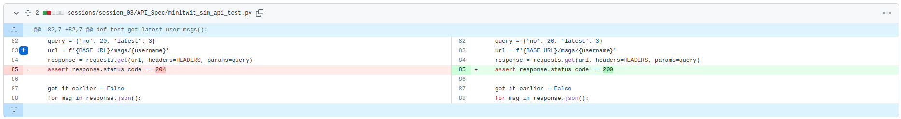
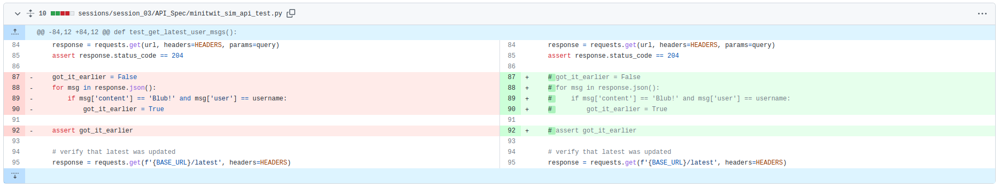
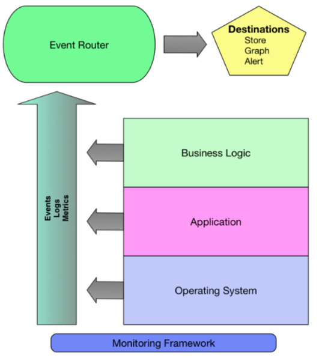
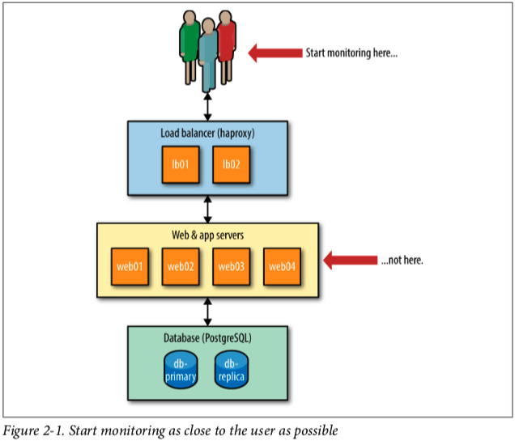
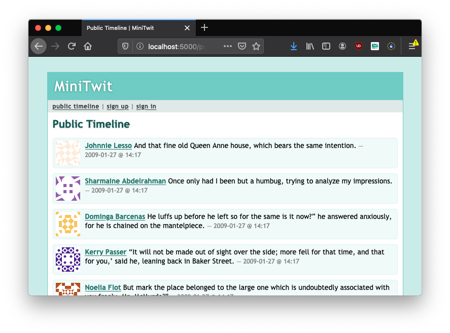
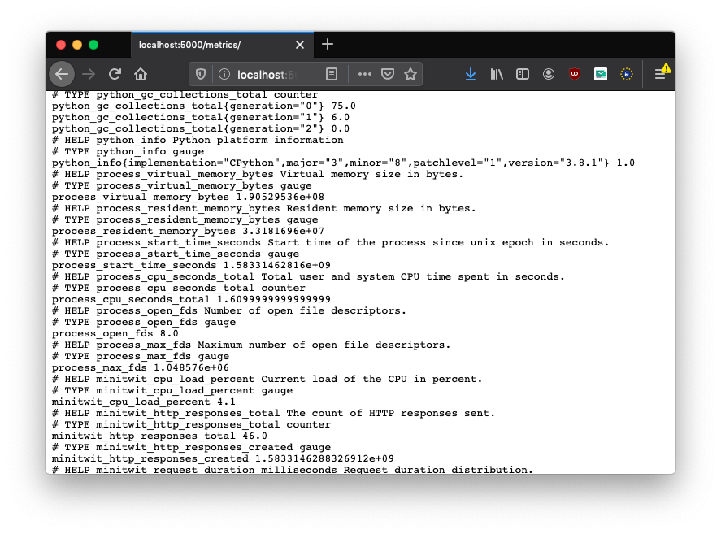
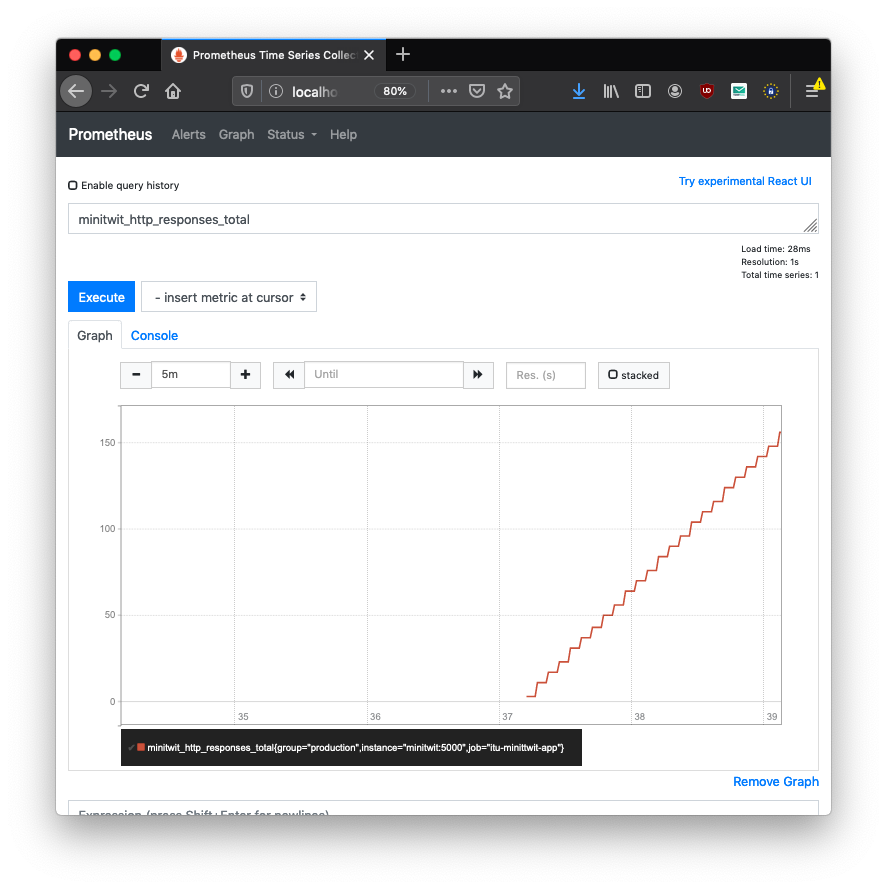
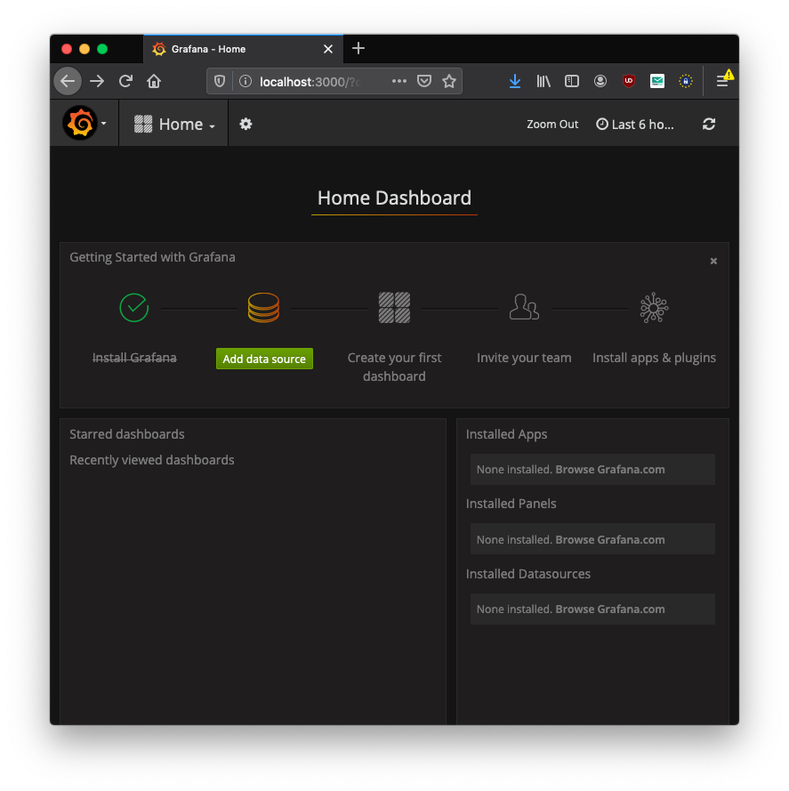
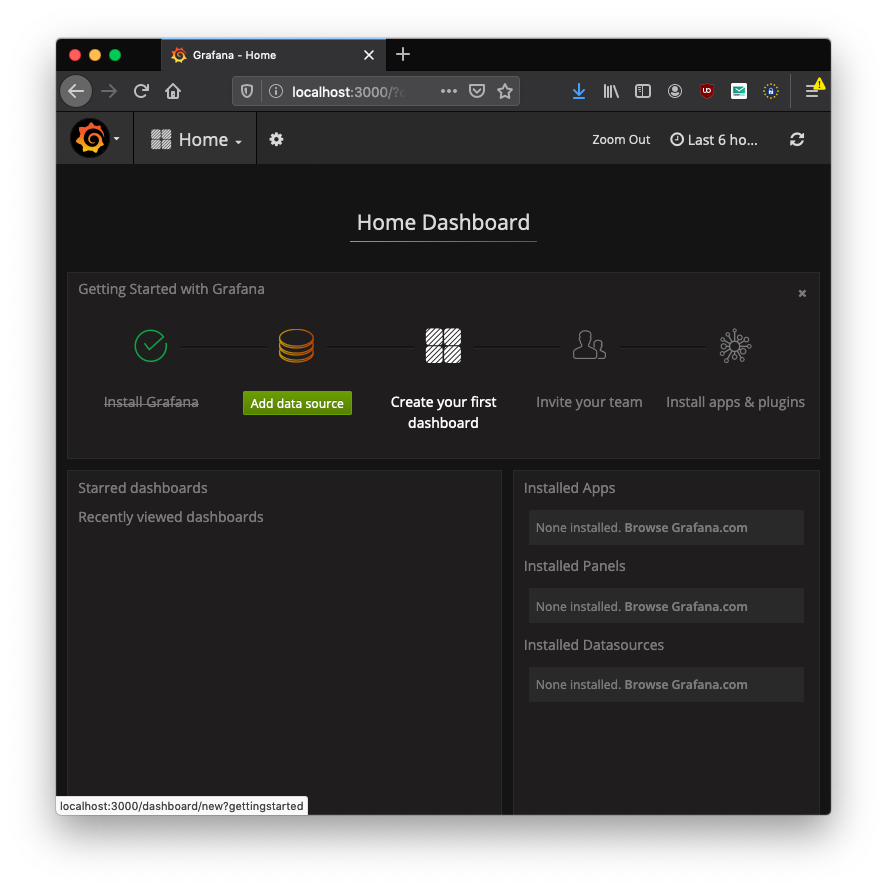

class: center, middle <img src="https://www.saa-authors.eu/picture/739/ftw_768/saa-mtcwmza4nzq5mq.jpg" width=40%/> # DevOps, Software Evolution and Software Maintenance Helge Pfeiffer, Assistant Professor,<br> [Research Center for Government IT](https://www.itu.dk/forskning/institutter/institut-for-datalogi/forskningscenter-for-offentlig-it),<br> [IT University of Copenhagen, Denmark](https://www.itu.dk)<br> `ropf@itu.dk` --- class: center, middle # How are you doing? --- class: center, middle # Feedback --- ## The state of your projects? --- ### Release Activity <object width="100%" data="http://138.197.185.85/release_activity_weekly.svg"></object> --- ### Weekly Commit Activity <object width="100%" data="http://138.197.185.85/commit_activity_weekly.svg"></object> --- ### Daily Commit Activity <object width="100%" data="http://138.197.185.85/commit_activity_daily.svg"></object> --- ### Daily Commit Activity <object width="70%" data="http://138.197.185.85/commit_activity_daily.svg"></object> Reflect about the patterns you see above and how "agile" it looks. --- ### Latest processed events? <object width="100%" data="http://104.248.134.203/chart.svg"></object> --- ### Latest processed events? <object width="60%" data="http://104.248.134.203/chart.svg"></object> Are you just counting or does it really display the latest processed event? The purpose of the `/latest` end-point is to provide a status over the latest processed event from the simulator. --- ### Error plot <object width="100%" data="http://104.248.134.203/error_chart.svg"></object> --- ### Issues with secrets in GitHub Actions workflows * [Issues logging in to remote server](https://teams.microsoft.com/l/message/19:ojKqkX6dw2VRi7brykTj3ftJiMl48lU-DS94dG52CwQ1@thread.tacv2/1677622603222?tenantId=bea229b6-7a08-4086-b44c-71f57f716bdb&groupId=baae1b93-1908-47e0-be31-2880b8a50185&parentMessageId=1677622603222&teamName=2023%20DevOps%2C%20Software%20Evolution%20and%20Software%20Maintenance&channelName=General&createdTime=1677622603222&allowXTenantAccess=false) * [Issues logging in to DockerHub](https://teams.microsoft.com/l/message/19:ojKqkX6dw2VRi7brykTj3ftJiMl48lU-DS94dG52CwQ1@thread.tacv2/1678024549404?tenantId=bea229b6-7a08-4086-b44c-71f57f716bdb&groupId=baae1b93-1908-47e0-be31-2880b8a50185&parentMessageId=1678024549404&teamName=2023%20DevOps%2C%20Software%20Evolution%20and%20Software%20Maintenance&channelName=General&createdTime=1678024549404&allowXTenantAccess=false) -- Follow steps in exercise tutorials precisely to reproduce them. Usually, when you see an error you did something slightly different, forgot a tiny step, or something similar. We check every tutorial before release and perform all tasks that we ask you to perform to double check that everything works as intended. -- Perhaps for debugging running workflows locally might help? That is actually a a drawback of GitHub Actions, that you have only their servers to execute your workflows. A tool that tries to replicate GitHuib workflows locally is `act` https://github.com/nektos/act --- ### The `/msgs/{username}` end-point ❤❤❤ Thank you for your help! ❤❤❤ It took a bit longer since I had to investigate and make up my mind on how to handle the situation. <a href="https://github.com/itu-devops/lecture_notes/pull/350/commits/4dd43bf3d1e5a5fa540a3e1ec437510b2ca8ffe9"></a> <a href="https://github.com/itu-devops/lecture_notes/pull/351/commits/d55e60ef0fd3763806def29bbccc41665e1e176a"></a> --- ### **Do not** deploy to a Platform-as-a-Service > * You are free to deploy to whichever Infrastructure-as-a-Service (IaaS) provider of your choice or your own servers. > - The only requirement is that your deployment is automatically reproducible, i.e., no clicking in UIs required, and that your application is reachable via a public IP/domain. > - **Do not** deploy to a Platform-as-a-Service, like Heroku, Google App-Engine, etc. > > [](../session_03/README_TASKS.md) -- > App Platform is a Platform-as-a-Service (PaaS) offering that allows developers to publish code directly to DigitalOcean servers without worrying about the underlying infrastructure. > > https://docs.digitalocean.com/products/app-platform/ --- ### Change of URLs? In case you need to change your URLs in the [`repositories.py`](https://github.com/itu-devops/lecture_notes/blob/master/repositories.py) file, please inform us about it. Just sending a pull-request is not enough, since we have to restart the simulator for your group then. After restart, the simulator continues from where it stopped. --- ### Tomorrow March 8th: International Women's Day <img src="https://upload.wikimedia.org/wikipedia/commons/thumb/a/ab/Concentraci%C3%B3n_del_Sindicato_de_Estudiantes_por_la_Huelga_Feminista_8M_2019.jpg/800px-Concentraci%C3%B3n_del_Sindicato_de_Estudiantes_por_la_Huelga_Feminista_8M_2019.jpg" width="70%"> I believe that this year's March 8th theme from the United Nations [_"DigitALL: Innovation and technology for gender equality."_](https://www.unwomen.org/en/news-stories/in-focus/2023/03/in-focus-international-womens-day) is relevant for our current and future work. --- ### How do you feel it is going with your projects? In the preparation material, I was asking you: > Can you figure out the following properties of your _ITU-MiniTwit_ with your group fellows? > > * CPU load during the last hour/the last day. > * Average response time of your application's front page. > * Amount of users registered in your system. > * Average amount of followers a user has. > > Keep a log of what you are doing to figure out these values. > > For each of the above properties into, categorize them by potentially interested parties in an organization. For example, *business department* (hypothetical), *operator*, etc. > > Which of the above categories do you consider the most important? In which role are you then? --- ### What is Monitoring? > From a technology perspective, monitoring is the tools and processes by which you measure and manage your IT systems. But monitoring is much more than that. Monitoring provides the translation between business value and the metrics generated by your systems and applications. Your monitoring system translates those metrics into a measurable user experience. That measurable user experience provides feedback to the business to help ensure it’s delivering what customers want. The user experience also provides feedback to IT to indicate what isn’t working and what’s delivering insufficient quality of service. > > Your monitoring system has two customers: > > * The business > > * Information Technology > > James Turnbull _"The Art of Monitoring"_ --- ### What is Monitoring? > > Monitoring is for asking questions. > > > > —Dave Josephsen, Monitorama 2016 > > That is, monitoring doesn’t exist to generate alerts: alerts are just one possible outcome. With this in mind, remember that every metric you collect and graph does not need to have a corresponding alert. > > Mike Julian _"Practical Monitoring"_ -- Important for your projects and for your future careers: > Without monitoring you are not doing your job. > > James Turnbull _"The Art of Monitoring"_ --- ### "Monitoring Maturity Model" According to James Turnbull on https://www.kartar.net/2015/01/a-monitoring-maturity-model/ * Manual, user-initiated, or no monitoring * Reactive * Proactive --- #### Manual, user-initiated, or no monitoring * Monitoring is largely manual, user initiated, or not done at all. * If monitoring is performed, it’s commonly managed via checklists, simple scripts, and other non-automated processes. * The focus here is entirely on minimizing downtime and managing assets. * Monitoring in this way provides little or no value in measuring quality of service. * Typical in small organizations with limited IT staffing, no dedicated IT staff. Adapted from https://www.kartar.net/2015/01/a-monitoring-maturity-model/ --- #### Reactive Monitoring * Monitoring is mostly automatic with some remnants of manual or unmonitored components. * Broad focus on measuring availability and managing IT assets. * There may be some movement towards using monitoring data to measure customer experience. * Monitoring provides some data that measures quality or service * Most of this data needs to be manipulated or transformed before it can be used * A small number of operationally-focussed dashboards exist * Typical in small to medium enterprises and common in divisional IT organizations inside larger enterprises Adapted from https://www.kartar.net/2015/01/a-monitoring-maturity-model/ --- #### Proactive Monitoring * Monitoring is considered core to managing infrastructure and the business. * Monitoring is automatic and often driven by configuration management tooling. * Metrics will focus on measuring application performance and business outcomes rather than stock concerns like disk and CPU. * Performance data will be collected and frequently used for analysis and fault resolution. -- * Focus on measuring quality of service and customer experience. * Monitoring provides data that measures quality or service * Much of this data is provided directly to business units, application teams and other interests parties via dashboards and reports. -- * Typical in web-centric organizations and many mature startups. * Products will not be considered feature complete or ready for deployment without monitoring and instrumentation. Adapted from https://www.kartar.net/2015/01/a-monitoring-maturity-model/ --- ### Monitoring Framework  From James Turnbull _"The Art of Monitoring"_ --- ### Pull versus Push Monitoring * Most monitoring systems are pull/polling-based: - E.g., Nagios usually queries monitored sub-systems - I.e., the more hosts and services in production the more checks Nagios executes * In a push-based architecture, hosts, services, and applications send data to a central collector. - The collection is fully distributed on the hosts, services, and applications that emit data. Note, Prometheus can be considered a push-based monitoring system or a hybrid as each monitored application pushes its metrics which are then pulled by the central Prometheus system. --- ### Blackbox vs. Whitebox Monitoring #### Blackbox Monitoring > Blackbox monitoring probes the outside of a service or application [...] You query the external characteristics of a service: does it respond to a poll on an open port, return the correct data or response code. An example of blackbox monitoring is performing an HTTP check and confirming you have received a 200 OK response code. > > James Turnbull _"The Art of Monitoring"_ -- #### Whitebox Monitoring > Whitebox monitoring instead focuses on what’s inside the service or application. The application is instrumented and returns its state, the state of internal components, or the performance of transactions or events. Most whitebox monitoring is done either via emitting events, logs and metrics to a monitoring tool, the approach we’ve detailed about in our push-based model, or exposes this information on a status page of some kind, which a pull-based system would query. > > James Turnbull _"The Art of Monitoring"_ --- ### Passive vs. Active Monitoring #### Passive Monitoring > Synthetic, script-based > * to determine if application is up or down > * to verify availability even without current end-users > * essential to establish a performance baseline before a new release -- #### Active Monitoring > Passive "sniffing" to observe what real users observe > * based on real users interaction data > * measures users' experience under their conditions, such as location etc. Both adapted from: https://www.moviri.com/2014/01/active-passive-monitoring/ --- ### Monitoring Design Pattern: Monitor from the User’s Perspective  Picture from Mike Julian _"Practical Monitoring"_ --- ## Categories of Monitoring (Monitoring Tactics) * Monitoring the Business * Frontend Monitoring * Application Monitoring * Server Monitoring (Infrastructure Monitoring) * Network Monitoring * Security Monitoring From Mike Julian _"Practical Monitoring"_ --- ### Monitoring the Business Business stakeholders ask other questions than software developers. Key Performance Indicators (KPI) should be able to tell how a business is doing. With regards to our _ITU-MiniTwit_ these might be questions like: * Are users able to use _ITU-MiniTwit_ in their daily lives? * Are the numbers of active users growing, declining, or stagnant? * Are the users happy? * Can we/are we making money? * Are we profitable? -- Possible metrics: * Net promoter score * Revenue per customer * Cost per customer * Burn rate * ... --- ### Frontend Monitoring For Mike Julian in _"Practical Monitoring"_ the frontend are all artifacts _"that are parsed and executed on the client side via a browser or native mobile app. When you load a web page, all of the HTML, CSS, JavaScript, and images constitute the frontend."_ --- ### Frontend Monitoring - Why to do it? <img src="https://wp-aberdeen.s3.amazonaws.com/wp-content/uploads/2016/12/10052638/JimRapoza.png" width="50%"> > Around 5% of organizations say that users have left their website after a one second delay. [...] After a two second delay, the abandonment rate stays about the same for traditional, browser-based desktop web users, but the rate of abandonment for mobile websites nearly triples. > > https://www.aberdeen.com/cmo-essentials/aberdeens-surprising-insights-2016/ -- Amazon: > Every 100ms delay costs 1% of sales > > https://077db662-a-62cb3a1a-s-sites.googlegroups.com/site/glinden/Home/StanfordDataMining.2006-11-28.ppt <!-- Two types: - a) Real user monitoring (RUM) - b) Synthetic Monitoring --> --- ### Application Monitoring Instrumenting applications with metrics. This is what we a going to do today, see below. Example questions: * How long do our database queries take? * How long does some external vendor API takes to respond? * How many logins happen throughout the day? --- ### Infrastructure Monitoring ### Monitoring via provider Dashboard https://www.digitalocean.com/docs/monitoring/how-to/install-agent/ <img src="https://images.prismic.io/www-static/c4c27f45-2295-4ff8-b12e-647c4f765f97_9b263f102ee65537d8881fe374752b5150e93e87_dashboard_v2.jpeg?auto=compress,format" width="60%"> ```python https://collectd.org/ ``` --- ### Monitoring via CLI #### Monitoring CPU usage ```bash $ top top - 14:24:42 up 13 days, 23:42, 1 user, load average: 0.00, 0.00, 0.00 Tasks: 85 total, 1 running, 46 sleeping, 0 stopped, 0 zombie %Cpu(s): 0.3 us, 0.3 sy, 0.0 ni, 99.3 id, 0.0 wa, 0.0 hi, 0.0 si, 0.0 st KiB Mem : 1009172 total, 187524 free, 98916 used, 722732 buff/cache KiB Swap: 0 total, 0 free, 0 used. 728164 avail Mem PID USER PR NI VIRT RES SHR S %CPU %MEM TIME+ COMMAND 29200 root 20 0 44540 4112 3520 R 0.3 0.4 0:00.04 top 1 root 20 0 159928 9500 7056 S 0.0 0.9 0:10.70 systemd 2 root 20 0 0 0 0 S 0.0 0.0 0:00.01 kthreadd 4 root 0 -20 0 0 0 I 0.0 0.0 0:00.00 kworker/0:0H ``` --- #### Load ```bash $ uptime 15:50:34 up 14 days, 1:08, 1 user, load average: 0.00, 0.00, 0.00 ``` #### Monitoring Memory ```bash $ free -m total used free shared buff/cache available Mem: 985 96 183 0 705 711 Swap: 0 0 0 ``` --- Finding if a program was killed (by OOMKiller) due to excessive memory consumption: ```bash $ grep -i -r 'killed process' /var/log/ $ dmesg | grep -i 'killed process' ``` --- #### Monitoring the Network ```bash sudo apt-get install iftop sudo apt-get install nethogs ``` ``` $ iftop 12.5Kb 25.0Kb 37.5Kb 50.0Kb 62.5Kb └───────────────┴───────────────┴───────────────┴───────────────┴─────────────── webserver => nat-10.itu.dk 4.34Kb 4.57Kb 4.55Kb <= 2.23Kb 2.23Kb 2.21Kb webserver => 67.207.67.3 0b 0b 48b <= 0b 0b 81b webserver => static-28.108.248.49-tata 0b 0b 16b <= 0b 0b 21b webserver => 185.156.73.54 0b 0b 8b <= 0b 0b 16b ──────────────────────────────────────────────────────────────────────────────── TX: cum: 49.2KB peak: 6.25Kb rates: 4.34Kb 4.57Kb 4.62Kb RX: 28.0KB 4.23Kb 2.23Kb 2.23Kb 2.33Kb TOTAL: 77.2KB 9.73Kb 6.58Kb 6.80Kb 6.95Kb ``` ``` $ nethogs NetHogs version 0.8.5-2 PID USER PROGRAM DEV SENT RECEIVED 29948 root sshd: root@pts/0 eth0 0.757 0.490 KB/sec ? root ...225.103.230:21-104.206 0.000 0.000 KB/sec ? root ...225.103.230:4071-45.13 0.000 0.000 KB/sec ? root ...225.103.230:23-75.165. 0.000 0.000 KB/sec 28239 do-age.. ..pt/digitalocean/bin/do- eth0 0.000 0.000 KB/sec ? root unknown TCP 0.000 0.000 KB/sec TOTAL 0.757 0.490 KB/sec ``` --- #### Disk ```bash $ df -h Filesystem Size Used Avail Use% Mounted on udev 481M 0 481M 0% /dev tmpfs 99M 620K 98M 1% /run /dev/vda1 29G 4.9G 25G 17% / tmpfs 493M 0 493M 0% /dev/shm tmpfs 5.0M 0 5.0M 0% /run/lock tmpfs 493M 0 493M 0% /sys/fs/cgroup /dev/vda15 105M 3.6M 101M 4% /boot/efi tmpfs 99M 0 99M 0% /run/user/0 $ du -h ``` --- ### Network & Security Monitoring See chapters 9 and 10 in Mike Julian _"Practical Monitoring"_. I skip them here as they are likely part of the security class and out of scope of this class. Likely, once Mircea talks to you about security, you might want enhance you monitoring setup including some security concerns. --- ### Monitoring Solutions * Nagios https://www.nagios.com/products/nagios-log-server/ * Munin http://munin-monitoring.org/ * Netdata https://my-netdata.io/ * Shinken http://www.shinken-monitoring.org/ * StatsD https://github.com/statsd/statsd * Prometheus https://prometheus.io/ ... and many more --- ### Monitoring with Prometheus (https://prometheus.io/) * Basically a time series key-value storage * Supports both, pulling and pushing data - We will only use data pull * Targets (for pulling) via service discovery or config - [client libraries](https://prometheus.io/docs/instrumenting/clientlibs/) for instrumenting application code <img src="https://prometheus.io/assets/architecture.png" width="90%"> --- ### Prometheus Client Libraries: * Go * Java or Scala * Python * Ruby * Rust Unofficial third-party client libraries: * Bash * C and C++ * Common Lisp * Dart * Elixir and Erlang * Haskell * Lua for Nginx and Tarantool * .NET / C# * Node.js * OCaml * Perl * PHP * R See, https://prometheus.io/docs/instrumenting/clientlibs/ --- ### Four Metric Types The client libraries offer four core metric types: * Counter * Gauge * Histogram * Summary They are only differentiated in the client libraries. The Prometheus server currently flattens all data into untyped time series. See: https://prometheus.io/docs/concepts/metric_types/ --- ### Dissecting an Example:  ``` $ git clone git@github.com:itu-devops/itu-minitwit-monitoring.git $ cd itu-minitwit-monitoring $ docker-compose up --build ``` **OBS**: Remember that this example runs a single application without any load balancer or similar. In case you want to collect metrics of one "logical" application running as many instances you might want to read the following for an example of how to solve it: https://blog.codeship.com/monitoring-your-synchronous-python-web-applications-using-prometheus/ --- ##### _ITU-MiniTwit_ at http://localhost:5000  --- ##### _ITU-MiniTwit_ Metrics for This Node at http://localhost:5000/metrics  --- ##### The Prometheus Web-client at http://localhost:9090  --- ##### Grafana at http://localhost:3000 Default login and password: `admin`  --- #### The Instrumented Application The dependency to the Prometheus client library in `requirements.txt`: ``` prometheus_client==0.7.1 ``` --- #### The Instrumented Application ```python from prometheus_client import Counter, Gauge, Histogram from prometheus_client import generate_latest CPU_GAUGE = Gauge( "minitwit_cpu_load_percent", "Current load of the CPU in percent." ) REPONSE_COUNTER = Counter( "minitwit_http_responses_total", "The count of HTTP responses sent." ) REQ_DURATION_SUMMARY = Histogram( "minitwit_request_duration_milliseconds", "Request duration distribution." ) # Add /metrics route for Prometheus to scrape @app.route("/metrics/") def metrics(): return Response( generate_latest(), mimetype="text/plain; version=0.0.4; charset=utf-8" ) @app.before_request def before_request(): """Make sure we are connected to the database each request and look up the current user so that we know he's there. """ request.start_time = datetime.now() g.db = connect_db() g.user = None if "user_id" in session: g.user = query_db( "select * from user where user_id = ?", [session["user_id"]], one=True, ) CPU_GAUGE.set(psutil.cpu_percent()) @app.after_request def after_request(response): """Closes the database again at the end of the request.""" g.db.close() REPONSE_COUNTER.inc() t_elapsed_ms = (datetime.now() - request.start_time).total_seconds() * 1000 REQ_DURATION_SUMMARY.observe(t_elapsed_ms) return response ``` --- #### The Prometheus Configuration File ```yml global: scrape_interval: 15s # By default, scrape targets every 15 seconds. evaluation_interval: 15s # Evaluate rules every 15 seconds. # Attach these extra labels to all timeseries collected by this Prometheus instance. external_labels: monitor: 'codelab-monitor' rule_files: - 'prometheus.rules.yml' scrape_configs: - job_name: 'prometheus' # Override the global default and scrape targets from this job every 5 seconds. scrape_interval: 5s static_configs: - targets: ['prometheus:9090'] - job_name: 'itu-minittwit-app' # Override the global default and scrape targets from this job every 5 seconds. scrape_interval: 5s static_configs: - targets: ['minitwit:5000'] labels: group: 'production' ``` --- ### The Prometheus Dashboard Navigate your browser to http://localhost:9090/graph?g0.range_input=1h&g0.expr=minitwit_cpu_load_percent&g0.tab=0&g1.range_input=1h&g1.expr=minitwit_http_responses_total&g1.tab=0&g2.range_input=1h&g2.expr=minitwit_request_duration_milliseconds_bucket&g2.tab=0 to see some of your metrics through Prometheus inbuilt dashboard. --- ### Grafana Dashboards * Just because you can include everything does not mean you should! - Keep them organized - Try to "tell a story", i.e., you will likely have different dashboards for you and the operators - Include more than infrastructure monitoring, remember 'Monitor close to the User' from the beginning of the session. - See more here: https://www.metricly.com/devops-dashboard-best-practices/ * See https://grafana.com/dashboards * https://codeascraft.com/2011/02/15/measure-anything-measure-everything/ Grafana dashboards support alerts. For active monitoring, you might want to setup some alarms and get notified when something goes wrong. You can get alerts either on the dashboard or -likely more suitable- via other channels such as: Mail, PagerDuty, Slack, Telegram --- #### Configuring the Dashboard To configure the dashboard you have to use queries in PromQL, see more here: https://prometheus.io/docs/prometheus/latest/querying/basics/ * Grafana can connect to multiple backends * When querying Prometheus you need to use the PromQL syntax - `minitwit_cpu_load_percent` - `minitwit_cpu_load_percent{group="production",instance="minitwit:5000",job="itu-minittwit-app"}` - `rate(minitwit_cpu_load_percent[5m])` - `sum(rate(minitwit_cpu_load_percent[5m])) by (job)`  --- ## What to do now? * To prepare for your project work, practice with the [exercises](./README_EXERCISE.md) * Do the [project work](./README_TASKS.md) until the end of the week * And [prepare for the next session](../session_07/README_PREP.md)